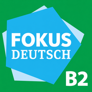

Крок за кроком — до впевненої німецької
Особисті слова додаються лише після твого підтвердження. Перенесення такого слова в GitHub не змінює його статистику.
Одне слово рахується один раз на день в усіх режимах, навіть після помилки. Як і в лічильнику згори, приховані слова не враховуються. Історія роботи з ними зберігається.
Німецьке: повторне натискання — приклад, утримання — приховати. Українське: утримання — зауваження до перекладу.